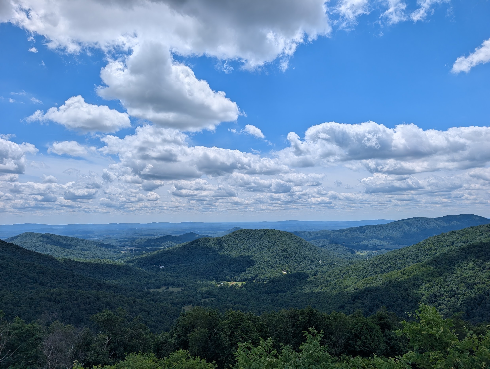

Hello! My name is Liam. I'm a composer and a programmer studying mathematics and music at Oberlin. You can read about some of my interests here.
Reach out: hi@liamfissell.com
On this page:
I have always enjoyed mathematics as a set of practices that, as my dad likes to say, is "unreasonably good at describing the universe." But now that I've declared my math major at Oberlin, I get to spend more time than ever squinting at equations. As a musician, I'm particularly interested in mathematical approaches to analyzing periodicity and harmonicity, such as Fourier analysis. I'm also toying with ways to use the tools of group theory to analyze and modify frequency spectra.
Recently, a friend came pretty close to convincing me that data science is the future, so I have also been trying to develop a better understanding of modern statistical learning and forecasting. In pursuit of that goal, I've been reading ISLP and fpp3, two canonical texts in their respective fields.
I'm also a huge nerd about sound! I enjoy composing music for various instruments, and I spend quite a lot of time making techno noises inside the DAW. I have an EP coming out very soon, so WATCH OUT! Because I'm studying Technology in Music and Related Arts at Oberlin, I get to earn a full conservatory degree while also playing with vintage synthesizers and composing music for my friends. It's a pretty sweet deal!
I enjoy documenting sounds and places with my trusty Zoom H4n Pro. Many such field recordings make it to liamsounds, where they're released to the creative commons.
Although a lot of my day-to-day life is spent squinting at least upper bound proofs, I try to find as much time as possible to create with techonology. I use Rust and JavaScript on a regular basis, but I also enjoy embedded development and audio development in C. Here are some of my favorite projects, in no particular order:
When I'm not mathing, programming, or composing, it's quite likely you will find me listening to music or reading a book. Perhaps even both! I have a playlist of musical interests which you may find interesting.
While reading, I'm often drawn to personal narratives that reveal something broader about the conditions under which they were written; when I first read Travels with Charley, I loved how Steinbeck's unique (and often flawed!) perspective was a specific lens through which America's shifting culture could be briefly brought into focus. However, I also enjoy fantasy novels and the occasional weird-but-true anecdote. Here are a few of my favorite narratives:
Beyond books and music, I'm an avid home cook! I love deglazing pans and caramelizing cabbage and making salads with more red onion than is frankly tasteful. Unlike a certain best friend of mine, I don't always hold a strong allegiance to the mise en place mindset. However, I still have a divisive cooking opinion to share: non-stick pans are evil and bad. Yes, even the HexClad stuff Gordon Ramsay uses. My kitchen is full of Cuisinart stainless steel pans and cast iron skillets.
I enjoy cars in general and long road trips in specific. I drive a 2007 Subaru Outback with a 5-speed manual transmission! I'm hoping my next car will be at least a little bit newer, but I do find some comfort in the routines of caring for a less-than-reliable vehicle: verifying the existence of coolant and brake fluid before long road trips, tasting the mystery fluids that drip from the engine bay, and checking my oil every gas station. This summer, I made it to Shenandoah Velley and Jasper National Park. Here are a few relevant photos:
